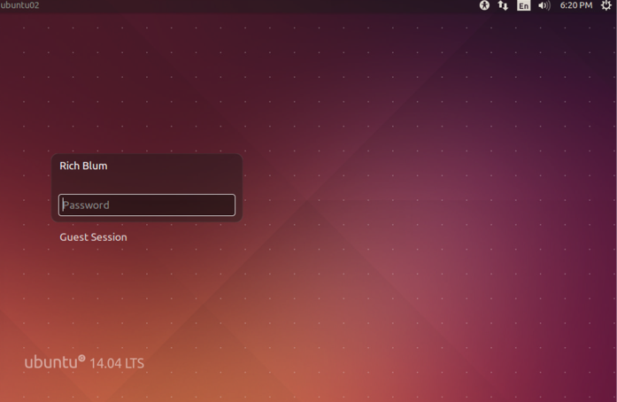

انتخاب یک سیستم عامل
واقعیت این است که شما برای یادگیری سیستم عامل لینوکس در حال خواندن این کتاب هستید. برای شروع، باید بفهمید که سیستم عامل چیست و لینوکس چه گونه سیستم عاملی است. این فصل به مسائل و مشکلات مبانی میپردازد.
در این فصل، توضیح می دهیم که یک سیستم عامل چیست ، چگونه کاربران با یک سیستم عامل ارتباط برقرار میکنند ، سیستم عامل لینوکس با سایر سیستم عامل هایی که ممکن است شما با آنها آشنا باشید مقایسه ميشود و تفاوت بین پیاده سازی های لینوکس را روشن میکنیم. درک این مسائل به شما کمک می کند تا با یادگیری لینوکس و جابجایی بین سیستم های مبتنی بر لینوکس و سایر سیستم ها ، راه خود را پیدا کنید.
-
سیستم عامل چیست؟
-
بررسی رابط کاربری
-
لینوکس در چه قسمتی از دنیای سیستم عامل جا دارد؟
-
یک توزیع جیست؟
سیستم عامل چیست؟
سیستم عامل اساسی ترین ویژگی های رایانه را ، حداقل از دید نرم افزاری، ارائه میدهد. سیستم عامل به شما اجازه میدهد تا از سخت افزار رایانه استفاده کنید، استاندارد های رابط کاربری را مشخص میکند، و ابزار های مفیدی که رایانه را قابل استفاده میکنند را ارائه میدهد. در نهایت، همه این ویژگی ها به هسته سیستم عامل منتهی میشوند که در ادامه توضیحات بیشتری در این رابطه داده میشود. سایر ویژگی های سیستم عامل نیز به برنامه های بالاتر از سطح هسته وابسته اند که بعد ها در همین فصل توضیح داده میشوند.
هسته چیست؟
هسته سیستم عامل یک مؤلفه نرم افزاری است که وظیفه مدیریت انواع مختلف ویژگی های سطح پایین رایانه را دارد، از جمله:
- رابط سخت افزار(آداپتور شبکه، هارد دیسک،و..)
- تخصیص حافظه موقت به برنامه های در حال اجرا
- اختصاص زمان پردازش برنامه برای واحد پردازنده مرکزی
- مقدر نمودن ارتباط برنامه ها با یکدیگر
وقتی شما در حال استفاده از یک برنامه هستید(مثلا یک مرورگر وب)، بسیاری از عملکرد های اساسی آن به هسته متکی است. مرورگر وب به شرطی میتواند با دنیای خارج ارتباط برقرار کند که توانایی استفاده از عملکرد های شبکه که توسط هسته ارائه میشوند را داشته باشد. هسته برای مرورگر وب مقداری از حافظه را تخصیص میدهد و همچنین پردازش های این ابزار را برای واحد پردازنده مرکزی زمان بندی میکند که بدون این عملکرد ها ابزار توانایی اجرا شدن را نخواهد داشت. مرورگر وب برای نمایش محتوای چندرسانه ای نیاز به افزونه هایی داشته باشد که آنها نیز توسط سرویس های هسته فراهم میشوند.
اعمال مشابهی در مورد هر برنامه ای که در رایانه اجرا می کنید اجرا میشود، اگرچه جزئیات در سیستم عامل ها و برنامه ها متفاوت است.
در مجموع، هسته، نرم افزاری است که مانند "چسب" اجزاء رایانه را در کنار یکدیگر نگه میدارد. بدون هسته، یک سیستم عامل مدرن تقریبا توانایی انجام هیچ کاری را ندارد.
هسته ها قابل تعویض نیستند(نمیتوان هسته یک سیستم عامل را درون دیگری قرار داد)، هسته لینوکس از هسته مک و یا ویندوز متفاوت است. هر کدام از این هسته ها دارای طراحی داخلی خاص و روابط نرم افزاری مختص خود هستند. بدین ترتیب هر سیستم عامل برپایه هسته ای ساخته شده است و اس مجموعه نرم افزاری خود برای ارائه ویژگی های مختص خودش استفاده میکند.
لینوکس از هسته ای به نام Linux استفاده میکند(در واقع نام سیستم عامل گنو/لینوکس است که شامل نرم افزار های پروژه گنو و هسته لینوکس میباشد اما به اختصار به آن "لینوکس" نیز میگویند). برنامه هایی که متکی به هسته نیستند ویژگی های دیگری را ارئه میدهند که امکان ارتباط با لینوکس را دارند و بیشتر آنها در سیستم عامل های دیگر نیز موجود هستند، همانگونه که در قسمت بعدی "چه چیز دیگری یک سیستم عامل را میسازد؟" بررسی خواهیم کرد.
دانش آموزی به نام Linus Torvalds هسته لینوکس را در سال 1991 شروع به ساختن کرد. لینوکس در آن زمان به صورت قابل توجهی گسترش یافت. امروزه روی طیف گسترده ای از CPU ها و سخت افزار ها نیز قابل اجراست. ساده ترین راه یادگیری لینوکس استفاده از آن به عنوان سیستم عامل اصلی روزانه است و پیکربندی آن برای این امر در این کتاب مورد بررسی قرار میگیرد. هسته لینوکس، با این حال، روی هر چیزی از تلفن های همراه تا ابر کامپیوتر های قدرتمند قابل اجراست.
خیلی از برنامه ها روی چندین هسته قابلیت اجرا را دارند، اما نیاز به یک سری تغییرات و تطابق بخشی ها از سمت برنامه نویس برای ویژگی های خاص سیستم عامل دارند. برنامه نویس ها برای سیستم عامل های مختلف فایل های باینری مختلفی میسازند(فایل های باینری فایل هایی هستند که برای هسته ها و پردازنده های مختلف به صورت جداگانه ساخته میشوند).
چه چیز دیگری یک سیستم عامل را میسازد؟
هسته، بخش مرکزی هر سیستم عاملی است که کاربران به صورت مستقیم نمیتوانند ارتباطی با آن داشته باشند، به جای آن اکثر کاربران با تعداد زیادی اجزاء نرم افزاری ارتباط برقرار میکنند که این عمل به ویژگی های خاص سیستم عامل ها بستگی دارد! این گونه ابزار ها شامل موارد زیر میشوند:
پوسته های خط فرمان : سالها پیش، کاربران منحصراً از طریق نوشتن دستورات درون یک برنامه (که به آن shell یا پوسته میگوییم) با رایانه ارتباط برقرار میکردند. دستورات توانایی تغییر نام فایل ها، اجرای ابزار ها، و... را داشتند. اگر چه بسیاری از رایانه ها امروزه از روابط متنی پوسته استفاده نمیکنند، اما هنوز هم در سطح متوسط و حرفه ای کاربران لینوکس دارای کاربرد های فراوانی میباشند، و آنها را در بخش ششم مورد بررسی قرار خواهیم داد. بسیاری از پوسته ها با قابلیت های مختلف برای سیستم عامل های مختلف وجود دارند. در سیستم عامل لینوکس پوسته ای به نام Bourne Again Shell یا Bash بسیار مشهور است(و در اکثر توزیع ها به صورت پیشفرض از این پوسته استفاده میشود).
رابط گرافیکی کاربر : رابط گرافیکی کاربر (GUI) حداقل از منظر یک کاربر تازه کار، بهبودی برای پوسته متنی است. به جای نوشتن دستورات، محیط گرافیکی به آیکن ها، منو ها، و اشاره گر موس وابسته است. سیستم عامل های ویندوز و مک محیط گرافیکی خاص خودشان را دارند. اما لینوکس متکی بر یک محیط گرافیکی به نام X Window System است که به اختصار به آن X یا Xorg نیز گویند، البته در سال های اخیر یک پروتکل گرافیکی بسیار بهتر در دست توسعه قرار گرفته که Wayland نام دارد و متفاوت تر از X میباشد، که در سطح های بعدی به آنها خواهیم پرداخت. X یک محیط گرافیکی پایهای است، به سبب آن، لینوکس از محیط های میزکار(Desktop Environments) همانند GNOME و یا K Desktop Environment(KDE) / Plasma استفاده میکند تا برای کاربر محیط کامل تری برای استفاده بسازد. تفاوت های زیادی بین میزکار های لینوکس و محیط های گرافیکی ویندوز و یا مک وجود دارد که ممکن است در ابتدای استفاده شما را شوکه کنند!
برنامه های کاربردی : سیستم عامل های مدرن همواره با تنوع نرم افزار های کاربردی/سودمند، مانند ماشین حساب، تقویم، ویرایشگر متن، ابزار های تعمیر و نگهداری دیسک، و... ارائه میشوند. این برنامه ها در سیستم عامل های مختلف، متفاوت اند. در واقع حتی نام و شیوه اجرای این ابزار ها نیز در سیستم عامل های مختلف، متفاوت اند. خوشبختانه، به صورت معمول میتوانید با خواندن فهرست برنامه در میزکار ها این ابزار ها را پیدا کنید.
کتابخانه های نرم افزاری : اگر برنامه نویس نیستید، نیاز به کارکردن مستقیم با کتابخانه ها را نخواهید داشت؛ با این وجود ما آنها را وارد لیست آموزشی کرده ایم چرا که سرویس های حیاطی نرم افزار ها را فراهم میآورند. بعنوان مثال در لینوکس بسیاری از برنامه ها به کتابخانه libc وابسته اند. سایر کتابخانه ها ویژگی های مرتبط با گرافیک کمک میکنند تا ابزار ها توانایی تجزیه دستورات برای خط فرمان را داشته باشند. بسیاری از کتابخانه های موجود در لینوکس به پربار کردن زمینه نرم افزاری لینوکس کمک میکنند.
برنامه های بهره وری : نرم افزار های معمول که برای استفاده از رایانه مورد استفاده قرار میگیرند، مانند مرورگر وب، پردازنده متن، ویرایشگر های گرافیکی و.... اگرچه چنین برنامه هایی معمولاً جدا از سیستم عامل هستند، ولی گاهاً برای سیستم عامل خاصی تولید میشوند. حتی زمانی که یک برنامه برای سیستم عامل های مختلف در دسترس است، ممکن است احساسات متفاوتی از تجربه را روی سیستم عامل های مختلف و محیط گرافیکی های مختلفی که ویژگی های خاصی برای ابزار فراهم میآورند را به کاربر منتقل کند.
بررسی رابط کاربری
قبل تر، در رابطه با تفاوت حالت متنی و گرافیکی رابط کاربری اشاره شد. اگرچه بسیاری از کاربران نهایی علاقه بیشتری به محیط کاربری گرافیکی به خاطر راحتی در استفاده دارند، لینوکس سنت قدرتمند رابط متنی را حفظ میکند. فصل ششم محیط متنی لینوکس را با جزئیات بیشتری مورد بررسی قرار میدهد و در فصل چهارم "استفاده از ابزار های رایج لینوکس" اصول پایه ای عملیات های محیط گرافیکی لینوکس مورد بررسی قرار میگیرد. مهم است که شما زمینه پایه ای اصول هر دو محیط گرافیکی و متنی را فراگیرید.
استفاده از حالت متنی رابط کاربری
در گذشته، و یا حتی امروزه، رایانه های لینوکس در حالت متنی راه اندازی میشدند. زمانی که سیستم به صورت کامل راه اندازی شد، خروجی نمایشگر متنی ساده برای اعلان ورود به سیستم نمایش میدهد که تقریبا مانند متن زیر است :
Fedora release 31 (Thirty One)
Kernel 5.5.fc21.x86_64 on an x86_64 (tty1)
essentials login:
جزئیات چنین اعلان ورودی در سیستم های مختلف، متفاوت است. این مثال شامل تکه هایی از اطلاعات زیر است :
-
نام سیستم عامل و نسخه آن : Fedora Linux 31
-
نام رایانه : essentials
-
نام دستگاه سخت افزاری مورد استفاده برای ورود : tty1
-
اعلان ورود : :login
برای ورود به چنین سیستمی، میبایست نام کاربری خودتان را پس از login وارد کنید. بعد از این عمل سیستم از شما رمز عبور رو خواهد خواست که آن را هم میبایست تایپ کنید. اگر شما نام کاربری و رمز عبور را به درستی وارد کرده باشید ، اعلان پوسته مانند زیر به شما نمایش داده خواهد شد :
[rich@essentials:∼]$در این کتاب، اکثر اعلان پوسته برای نوشتن دستورات از قلم انداخته میشود اگر چه فقط علامت دلار ($) به عنوان اعلان ورودی دستورات معمولی کاربر مد نظر قرار میگیرد. برخی از دستورات میبایست با دسترسی کاربر ریشه (root) وارد شوند که مدیریت سیستم عامل را بر عهده دارد، در این شرایط اعلان ورودی دستورات به علامت هشتگ (#) تغییر مییابد(در اکثر توزیع های برپایه لینوکس این استاندارد رعایت میشود!)، جزئیات اعلان پوسته درون توزیع های مختلف، متفاوت است اما در هر صورت شما میتوانید دستورات خود را پس از اعلان پوسته وارد نمایید. بعنوان مثال میتوانید دستور ls (که مخفف list است) را برای گرفتن لیست فایل ها درون دایرکتوری در حال استفاده را وارد کنید.
حذف حروف صدا دار، و گاهاً صامت، نام دستورات ابتدایی را کوتاه تر میکند تا زمان لازم برای نوشتن یک دستور و اجرای آن به حداقل برسد. اشکال این عمل اینست که برخی اوقات باعث مبهم شدن عملکرد دستور میشود ولی به علت کثرت ابزار ها چاره ای نیست.
برای نمونه، دستور ls لیستی از فایل ها را نمایش میدهد:
$ ls
106792c01.doc f0101.tif
این مثال دو فایل را در مسیر جاری نمایش میدهد که یکی از آن ها 106792c01.doc و دیگری f0101.tif میباشد. میتوانید دستورات دیگر، مانند cp برای کپی کردن، rm برای حذف نمودن و یا mv برای جابهجا کردن این فایل ها را استفاده کنید. در فصل ششم و هفتم "مدیریت فایل" چنین عملیات هایی روی فایل ها به صورت مفصل توضیح داده میشوند. برخی از برنامه های متنی، نمایشگر را برای ارائه به روز رسانی مداوم و یا امکان تعامل به روشی انعطاف پذیر با داده ها تحت کنترل میگیرند. تصویر ۱.۱، برای نمونه ویرایشگر متن nano را نمایش میدهد که با جزئیات در فصل دهم "ویرایش فایل ها" آن را مورد بررسی قرار میدهیم، هنگامی که nano در حال اجراست میتوانید از کلید های جابهجایی صفحه کلید برای جابهجا نمودن نشانهگر استفاده کنید و با نوشتن متن فایل را تغییر دهید و...

تصویر ۱.۱ برخی از ابزار های متنی تمام نمایشگر را در اختیار میگیرند.
حتی اگر به صورت گرافیکی وارد سیستم شده اید، میتوانید از محیط متنی پوسته درون پنجرهای(ابزاری) به نام Terminal استفاده کنید. محیط های گرافیکی معمول لینوکس قابلیت اجرای برنامه terminal را دارند که پوسته را درون خود شبیه سازی(اجرا) میکنند و میتوانید به کمک آن ابزار های متنی را اجرا کنید.
استفاده از یک رابط کاربری گرافیکی
تعداد زیادی از کاربران با محیط های گرافیکی نسبت به محیط دستور و متنی راحت ترند. بدین ترتیب بسیاری از سیستم های مدرن لینوکس به صورت پیشفرض با حالت گرافیکی راه اندازی میشوند و یک صفحه ورود گرافیکی مانند شکل ۱.۲ را ارئه میدهند که میتوانید در آن نام کاربری خود را از یک لیست انتخاب کنید و یا آن را وارد نمایید و پس از وارد کردن پسورد وارد سیستم شوید : 
تصویر ۱.۲ صفحات ورود گرافیکی در لینوکس همانند صفحات ورود ویندوز و یا مک هستند.
برخلاف ویندوز و مک، لینوکس دنیایی از میزکار (de) ها را در اختیار شما قرار میدهد که میتوانید متناسب با توزیع مدنظر خود و قابلیت های نرم افزاری میزکار و میزان مصرف منابع و علائق خود یکی(یا حتی چندین عدد) از آنها را انتخاب و استفاده کنید. میزکار های لینوکس شامل:
بسیاری از میزکار ها دارای تکنولوژی های کمکی هستند که به صورت داخلی(فقط برای همان میزکار) ارائه میشوند. در شکل ۱.۲ نماد شخص در بالا و سمت راست نمایشگر به شما اجازه انتخاب تکنولوژی های کمکی ارائه شده مانند screen reader , onscreen keyboard ,... را میدهند تا به شما برای ورود به سیستم کمک کند. میزکار های لینوکس میتوانند کاملا متفاوت از یکدیگر باشند اما همگی یک عمل را انجام میدهند. شکل ۱.۳ نمایی از میزکار KDE که به صورت پیشفرض در توزیع openSUSE ارائه شده به همراه چند نرم افزار در حال اجرا نمایش میدهد. در فصل چهارم محیط های میزکار معمول و ویژگی های آنها با جزئیات مورد بررسی قرار میگیرند، اما در حال حاضر دانستن این که همه آنها ویژگی هایی مانند زیر را به ارمغان میآورند کافیست:

تصویر ۱.۳ محیط های میزکار لینوکس کنترل های گرافیکی مختلفی را ایجاد میکنند که انتظار اکثر کاربران است.
اجرا کننده های نرم افزار شما میتوانید با انتخاب ابزار از منو ابزار آنها را اجرا کنید. معمولاً، یک یا چند منو در بالا، پایین یا اطراف صفحه نمایش وجود دارند. در شکل ۱.۳ با کلیک کردن روی نماد openSUSE در گوشه سمت چپ-پایین صفحه نمایش، منو ابزار ها نمایش داده خواهد شد.
مدیریت فایل ها لینوکس مدیر فایل های گرافیکی را که مشابه ویندوز و یا مک هستند را فراهم میکند. مانند پنجره ای که در وسط صفحه شکل ۱.۳ نمایش داده شده است.(مدیر فایل گرافیکی Dolphin)
کنترل پنجره ها شما میتوانید پنجره های مختلف را با کلیک کردن و کشیدن نوار عنوان آنها را جابهجا کنید و با کلیک کردن و گرفتن حاشیه پنجره، اندازه آن را تغییر دهید و کار هایی از این قبیل را انجام دهید.
چندین میزکار اکثر میزکار های لینوکس شما را قادر میسازند تا چندین میزکار مجازی را فعال کنید تا در هر کدام از آنها برنامه های دلخواهتان را اجرا کنید. این ویژگی برای خلوت نگه داشتن صفحه هنگام اجرای ابزار های متفاوت کار آمد است. به صورت معمول یک نماد برای جابهجایی میان این میزکار های مجازی فراهم شده است.
گزینه های خروج از سیستم شما میتوانید از نشست(session) لینوکس خود خارج شوید، که به شما اجازه میدهد رایانه را خاموش کنید و یا با کاربر دیگری وارد سیستم شوید.
همینطور که درباره لینوکس اطلاعات بیشتری کسب میکنید، کشف میکنید که محیط های گرافیکی آن کاملاً انعطاف پذیر هستند. اگر محیط گرافیکی پیش فرض توزیع لینوکسی خود را نمیپسندید، میتوانید آن را تغییر دهید. اگرچه تمامی آنها قابلیت های مشابهی را ارائه میدهند، برخی افراد نسبت به میزکار ها اولویت های محکمی دارند. در واقع لینوکس انتخاب هایی را در اختیار شما قرار میدهد که در ویندوز و یا مک این آزادی انتخاب را نخواهید داشت، پس برای امتحان چندین میزکار مختلف احساس آزادی داشته باشید.
لینوکس در چه قسمتی از دنیای سیستم عامل جا دارد؟
عنوان این بخش حاکی از مقایسه است، و از آنجا که این کتاب درمورد لینوکس است، مقایسه میبایست با سیستم های غیر لینوکس انجام گیرد. بنابر این لینوکس را با سه سیستم عامل دیگر از خانواده سیستم عامل ها مقایسه میکنیم: یونیکس، مک و مایکروسافت ویندوز.
مقایسه لینوکس با یونیکس
اگر شما قصد ترسیم"درخت خانوادگی" سیستم عامل ها را داشته باشید، نهایتاً کارتان به کندن موهایتان خواهد کشید. این مسئله به خاطر این هست که طراحان سیستم عامل گاهی اوقات قابلیت های سیستم عامل های دیگر را تقلید میکنند و حتی برخی مواقع ایده های دیگران را ترکیب میکنند تا سیستم عامل خودشان را راه اندازی کنند. نتیجه این عمل دنیایی از پیچیدگی ها در شباهت سیستم عامل ها به یکدیگر است که علت عمده آن "قرض گرفتن" کد میباشد. تلاش برای ساخت نقشه از این همه تاثیر گذاری ها میتواند بسیار سخت باشد. در مورد لینوکس و یونیکس، هرچند، یک قضیه کاملاً مشخص است :
لینوکس پس از یونیکس مدل سازی شد.
یونیکس در سال ۱۹۶۹ در آزمایشگاه AT&T شرکت Bell ساخته شد. تاریخچه یونیکس پیچیده است و شامل چندین انشعاب(که در آن کد به دو یا چند پروژه مستقل تقسیم میشود) و حتی کدی که تقسیم شده دوباره به صورت کاملی بازنویسی میشود. سیستم های لینوکس مدرن قسمت بزرگی از محصولات متن بازی هستند که از برنامه های یونیکس شبیه سازی شده اند، و یا حتی به صورت عمومی تر اصل کد متن باز پروژه های یونیکس هستند. این پروژه ها شامل موارد زیر میشوند :
هسته لینوکس لینوس تروالدز هسته لینوکس را به عنوان پروژه ای برای سرگرمی در سال ۱۹۹۱ ساخت، اما خیلی زود مهم تر از چیزی شد که فقط برای سرگرمی بتوان به آن مراجعه کرد. هسته لینوکس برای سازگاری با سایر کرنل های یونیکس طراحی شده بود، در واقع این پروژه از روابط نرم افزاری مشابه استفاده کرده بود. این عمل استفاده از نرم افزار های متن باز را در سایر نسخه های یونیکس که در آنها هسته لینوکس به کار رفته را آسان تر کرده است.
پروژه گنو پروژه گنو یونیکس نیست(GNU: Gnu's Not Unix) حاصل تلاشی از بنیاد نرم افزار آزاد (FSF) برای توسعه جایگزین های متن باز برای همه ی اجزاء سیستم عامل یونیکس است. در سال ۱۹۹۱ بنیاد نرم افزار آزاد تقریبا تمام نرم افزار ها بعلاوه یک هسته برجسته که مورد نیاز یک سیستم عامل بودند را منتشر کرد.(هسته GNU HURD در حال حاضر در دسترس است ام به اندازه لینوکس مشهور نیست.)
جایگزین ابزار های گنو، ابزار های تجاری ، انحصاری و متن باز توسعه داده شده برای نسخه های یونیکس Berkeley Software Distribution یا BSD هستند. ممکن است ابزارهای استفاده شده در یک سیستم عامل شبه یونیکس بر لذت استفاده از آن اثر بگذارند اما احساس استفاده از کل این مجموعه های ابزاری به اندازه کافی مشابه با استفاده از نسخه های یونیکس در هنگام مقایسه با یک سیستم عامل غیر یونیکسی میباشد.
پروتکل گرافیکی Xorg-X11 سیستم پنجره ای X برای اکثر سیستم عامل های یونیکس یک محیط گرافیکی است. بسیاری از توزیع های لینوکس امروزه از انواع Xorg-X11 بعنوان X استفاده میکنند. مانند سایر ابزار های اصلی حالت متنی که توسط پروژه گنو ارائه شده است، انتخاب سرور X میتواند بر برخی از قابلیت های سیستم عامل شبه یونیکس مانند انواع مختلف فونت های پشتیبانی شده تاثیر گذارد.
محیط های میزکار(DE) میزکار های Gnome, Plasma, Xfce, Cinnamon, Deepin, ... تعدادی از محیط های میزکار معروف متن باز هستند که به صورت گسترده ای جای میزکار های تجاری و حتی نسخه های تجاری یونیکس را نیز گرفته اند. بدین ترتیب نمیتوان تفاوت های بزرگی در این زمینه در مقایسه با یونیکس یافت.
برنامه های سرور با توجه به گذشته، یونیکس و لینوکس به عنوان سیستم عامل های سمت سرور مشهور بودند(/هستند)-- سازمان های مختلف از این سیستم عامل ها برای اجرای وب سرور ها، سرور های ایمیل، سرور های فایل، و... استفاده میکنند. لینوکس همان برنامه های مشهور سمت سروری را که یونیکس تجاری و BSD متن باز استفاده و قابل ارائه میکنند را نیز اجرا میکند.
نرم افزار های بهره وری کاربر در این قلمرو، همانند برنامه های سمت سرور، لینوکس ابزار های مشابهی را همانند سیستم عامل های غیر یونیکس ارائه میدهد. در مورد های خیلی کمی لینوکس برنامه های بیشتری را ارئه میدهد و یا حتی آنها را بهتر اجرا میکند که این دلیل بیشتر بخاطر شهرت لینوکس و گستره درایور های سخت افزاری که لینوکس ارائه میدهد میباشد. برای نمونه، اگر برنامه ای به پشتیبانی حرفه ای کارت گرافیک نیاز داشته باشد، شانس پشتیبانی شدن توسط لینوکس بیشتر از سایر سیستم عامل های شبه یونیکس که مشهوریت کمتری دارند است.
به صورت کلی، لینوکس میتواند به عنوان یک خانواده از سیستم عامل های شبه یونیکس در نظر گرفته شود. اگرچه لینوکس به صورت فنی یک سیستم عامل یونیکس نیست اما به اندازه کافی شباهت های زیادی با خانواده یونیکس وجود دارد و تفاوت های آن نسبت به تفاوت های این خانواده به صورت کلی با سایر سیستم عامل ها همانند ویندوز بی اهمیت هستند. لینوکس به خاطر شهرتی که دارد از پشتیبانی سخت افزاری بهتری برخوردار است حداقل روی کامپیوتر های شخصی رومیزی به خوبی اجرا میشود. برخی از انواع یونیکس ویژگی هایی را ارائه میدهند که لینوکس فاقد آنهاست، اگرچه برای نمونه ، ZFS یا Zettabyte File System در Solaris و FreeBSD و تعدادی سیستم عامل دیگر یک فایل سیستم با قابلیت های حرفه ای را ارائه کرده است به صورت کامل در لینوکس راه اندازی نشده.
مقایسه لینوکس با مک
سیستم عامل مک که یک نسخه تجاری بر پایه یونیکس و قسمت عظیمی از ساختش را مدیون قرض گرفتن کد های BSD است، این سیستم عامل رابط گرافیکی معمول یونیکس را به خاطر رابط کاربری خاص خود نادیده میگیرد. این مسائل سیستم عامل مک را هم مشابه با لینوکس میکنند و هم کاملا متفاوت با آن!
بیشتر بدانیم: برنامه نویسان برنامه ها را به روشی می خوانند که به عنوان "کد منبع" یا "source code" شناخته می شود. اگر چه کد منبع ممکن است برای افرادی که با برنامه نویسی آشنایی ندارند مبهم به نظر برسد، اما در مقایسه با حالتی از برنامه که رایانه آن را اجرا میکند بسیار واضح است -- به این حالت کد دودویی (binary code) میگویند. برنامه ای که بعنوان کامپایلر شناخته میشود، کد منبع را به کد دودویی تبدیل میکند.(از سویی دیگر برخی از زبان های برنامه نویسی به چیزی به نام مفسر (interpreter) متکی هستند که کد منبع را در حالت اجرا(خط به خط) کد منبع را به کد دودویی تبدیل میکنند، و احتیاج کامپایل کد منبع از بین رفته است.)
اصطلاح open source یا متن باز به در دسترس بودن کد منبع برمیگردد. این عملکرد درمورد برنامه ها و سیستم عامل های تجاری از عموم منع میشود. متقابلا هنگامی که یک برنامه نویس از طریق نرم افزار متن باز به کد منبع دسترسی داشته باشد توانایی رفع اشکالات، افزودن قابلیت ها، و به عبارتی دیگر تغییر روند توسعه و عملکرد نرم افزار را خواهد داشت.
شما میتوانید در سیستم عامل مک بسیاری از همان دستوراتی که در این کتاب شرح داده شده است را اجرا کنید تا به عملکرد های مشابه برسید. رابط کاربری مک از دیدگاه برنامه نویسی بعنوان Cocoa و از دیدگاه کاربر به نام Aqua شناخته میشود. این عناصر تقریباً برابر X و محیط های میزکار در لینوکس قرار میگیرند. به خاطر این که از دیدگاه برنامه نویسی Cocoa با X سازگار نیست برنامه هایی که برای مک توسعه داده شده اند به صورت مستقیم توانایی اجرا در لینوکس(یا سایر شبه یونیکس ها) را نخواهند داشت، و پورت کردن آن ها(که در واقع سازگار کردن کد منبع و کامپایل دوباره آن است) برای لینوکس یک مسئله پر از اشکال است. بدین ترتیب برنامه های بومی(مختص) مک به ندرت شانس تغییر برای لینوکس را پیدا میکنند.
مک شامل پیاده سازی هایی از X که زیر محیط Aqua در حال اجراست میشود. این مورد نسبتا موجب تسریع انتقال برنامه های گرافیکی لینوکس و سایر سیستم عامل های شبه یونیکس به مک میشود. هر چند که چنین برنامه هایی کاملاً با رابط کاربری Aqua مطابقت ندارند. شاید دکمه، منو، و سایر ویژگی هایی پیدا شوند که خارج از ظاهر معمول معادل مک باشد.
کمپانی اپل سیستم عامل مک را تنها برای رایانه های خودش در دسترس قرار داده است. شرایط مجوز این سیستم عامل نصب آن را روی سخت افزار هایی که اپل آنها را ارائه نمیکند ممنوع کرده است، حتی با کنار گذاشتن مجوز هم، نصب مک روی سخت افزاری که اپل آن را ارائه نکرده باشد عملکردی غیر متعهدانه است. گونه ی دیگری از OS X به نام iOS فقط روی دستگاه های iPad و iPhone اجرا میشود و به همان اندازی غیر قابل انتقال به سایر سخت افزار ها میباشد. بدین ترتیب OS X به صورت گسترده ای فقط به سخت افزار اپل محدود است. در تضاد آن، لینوکس تقریبا روی هر گونه سخت افزاری که اکثرا شامل رایانه های شخصی میشود قابل اجراست. حتی میتوانید روی مکینتاش سیستم عامل لینوکس را نصب کنید.
مقایسه لینوکس با ویندوز
امروزه اکثر رایانه های رومیزی و لپ تاپ ویندوز مایکروسافت را اجرا میکنند. بدین ترتیب اگر شما در نظر دارید تا لینوکس اجرا کنید، بیشترین مقایسه با ویندوز صورت میگیرد. به صورت کلی لینوکس و ویندوز قابلیت های مشابهی دارند. با این حال، تفاوت های بسیاری در جزئیات وجود دارد که شامل موارد زیر است :
مجوز لینوکس یک سیستم عامل متن باز است، در حالی که ویندوز انحصاری و تجاری است. در فصل ۲ "درک مجوز نرم افزاری" مسائل متن باز در جزئیات وسیع تری مورد بررسی قرار میگیرد، اما برای الان کافیست بدانید که در نرم افزار متن باز قابلیت کنترل شما بر روی رایانه بسیار گسترده تر از نرم افزار انحصاری است -- حداقل در زمینه تئوری بررسی و کنترل نرم افزار. در عمل، برای استفاده از مزایای متن باز ممکن است به تخصص نیاز داشته باشید. اگر شما در سازمانی کار کنید که فقط با ایده فروش نرم افزار به روش سنتی رایج باشد، ممکن است نرم افزار انحصاری ارجحیت داشته باشد.(برخی از گونه های لینوکس هرچند که در مسیری مشابه، اما با بستن قرار داد برای سرویس دهی فروخته میشوند)
هزینه بسیاری از انواع لینوکس به صورت رایگان در دسترس عموم قرار دارند و اگر برای قطع هزینه ها قدم بردارید به سمت آن ها جذب میشوید. از طرف دیگر، تخصص لازم برای نصب و نگهداری(مدیریت) لینوکس احتمالاً بیشتر از ویندوز خواهد بود. مطالعات(جدل های تبلیغاتی) در مورد مسئله هزینه کل مالکیت لینوکس در مقابل ویندوز به روش های مختلف انجام شده، اما بیشتر افراد طرفدار لینوکس بوده اند(البته در ایران اکثراً نسبت به این قضیه آگاهی نداریم و به صورت غیرقانونی و رایگان(کرک شده) سیستم عامل ویندوز و سایر ابزار ها مورد استفاده قرار میگیرند و هزینه ای بابت آنها پرداخت نمیشود!)
تطابق سخت افزاری اکثر اجزاء سخت افزاری معمولا به شکل درایور(نرم افزاری میانی که رابط سیستم عامل و سخت افزار است) به پشتیبانی سیستم عامل نیاز دارند. اکثر کارخانه های تولید قطعات سخت افزاری برای دستگاه های خود درایور های ویندوز را ارائه میکنند یا با شرکت مایکروسافت تعامل دارند تا مطمعن شوند که ویندوز درایور مناسبی را شامل میشود. اگرچه برخی از کارخانه ها درایور متناسب با لینوکس را نیز ارائه میکنند، برای اکثر قسمت ها جامعه لینوکس در کل باید درایور های مورد نیاز را تکمیل کنند. این بدین معنی است که درایور های لینوکس، هفته ها و یا ماه ها بعد از تولید سخت افزار در دسترس قرار میگیرند. به عبارتی دیگر توسعه دهندگان لینوکس، حتی مدت مدیدی پس از پشتیبانی قطعه سخت افزاری توسط شرکت سازنده، تمایل به حفظ درایور ها برای سخت افزار های قدیمی دارند. بدین ترتیب یک توزیع لینوکس مدرن ممکن است بهتر از آخرین نسخه ویندوز روی سخت افزار های قدیمی عمل کند. همچنین لینوکس تمایل دارد تا کمترین منابع سخت افزاری را استفاده کند، پس شما هنگام استفاده از لینوکس روی سخت افزار قدیمی بهره وری بیشتری خواهید داشت.
نرم افزار های موجود برخی از نرم افزار های رومیزی(desktop) مثل Microsoft Office برای ویندوز موجود هستند، اما برای لینوکس ارائه نشده اند. اما مشابه های نرم افزاری در لینوکس مانند Apache OpenOffice.org و یا LibreOffice ,... موجود هستند.(لطفا اگر نرم افزار خاصی را در ویندوز استفاده میکنید و قصد مهاجرت به لینوکس را دارید در ابتدا موجودیت آن در لینوکس را مورد بررسی قرار دهید و یا مشابه های آن را پیدا کنید. برای پیدا کردن مشابه های نرم افزاری دیگر به اینجا مراجعه کنید). اما در دیگر زمینه ها شرایط معکوس خواهد بود. برنامه های سروری مشهور همانند Apache web server در ابتدا برای لینوکس یا یونیکس توسعه داده شدند. هرچند تعداد زیادی از این سرور ها برای ویندوز موجود است اما در لینوکس بسیار بهتر اجرا میشوند.
رابط کاربری همانند مک، ویندوز هم از رابط کاربری مختص خودش استفاده میکند. این واقعیت به ضعف قابلیت حمل بین سیستم عامل ها میانجامد.(ابزار هایی وجود دارند که رابطی برای این فواصل هستند. (شبیه ساز های POSIX و پیاده سازی هایی از سیستم X در ویندوز و یا برنامه هایی که میتوان به کمک آن ها ابزار های ویندوز را در لینوکس اجرا کرد)). برخی از کاربران محیط کاربری ویندوز را به محیط میزکار های لینوس ترجیح میدهند ولی افراد بیشتری طرفدار میزکار های لینوکس هستند.
قابلیت پیکربندی لینوکس سیستم عاملی با قابلیت پیکربندی بسیار بیشتر از ویندوز است. اگرچه هر دو سیستم عامل برای اجرای برنامه های خاص هنگام راه اندازی، تغییر مضامین(themes) رابط کاربری و ... قابلیت هایی را فراهم میکنند اما طبیعت ذاتی لینوکس به خاطر متن باز بودن این مهم را ایجاب میکند که شما میتوانید هر چیزی را دلخواه خود تغییر دهید(محدودیت شما در تغییر و تنظیم و پیکربندی سیستم عامل دانش شماست!). علاوه بر این ، شما می توانید هر نوع لینوکس را که دوست دارید انتخاب کنید و هرگونه که مناسب دیدید شروع به کار در تنظیم سیستم کنید.
امنیت حرفه ای های هر کدام از این سیستم عامل ها معتقدند که سیستم عامل خودشان از دیگری امن تر است! آنها به دلیل این که روی مسائل متفاوتی از موضوعات امنیتی تمرکز میکنند چنین حرف هایی را میزنند. بسیاری از تهدید های ویندوز شامل ویروس ها هستند که بسیار گسترده اند و ویندوز را مورد هدف قرار میدهند. اما ویروس ها در اصل برای لینوکس مسئله ای ایجاد نمیکنند؛ در لینوکس تهدیدات امنیتی بیشتر مربوط به پیکربندی اشتباه سیستم و یا کاربر محلی غیر قابل اعتماد میشود.
برای بیش از دو دهه، ویندوز بر عرصه سیستم های رومیزی مسلط شد. در خانه ها و دفاتر کاربران با استفاده از ویندوز و نرم افزار های مشهور آن مثل MS Office آشنا شدند، اگر چه لینوکس نیز میتوانست در چنین مکان ها(و برای چنین استفاده هایی) مورد استفاده قرار گیرد، به دلایل مختلفی کمتر انتخاب شد -- که این دلایل ناآشنایی، نصب بودن ویندوز روی رایانه ها به صورت پیشفرض و عدم استفاده از برنامه های مختص لینوکس توسط اکثر کاربران بودند.
و از سمتی دیگر یونیکس به صورت عمومی و لینوکس به اختصاص خود بر بازار سرور تسلط پیدا کردند. لینوکس به سرور های وب، سرور های ایمیل، سرور های فایل و ... که اینترنت را تشکیل میدهند قدرت بخشید و بسیاری از مشاغل متکی به ارائه محلی این سرویس ها شدند. بدین ترتیب بیشتر مردم از لینوکس به صورت روزانه استفاده میکنند حتی اگر تشخیص ندهند.
در بیشتر موارد این ممکن است که با استفاده از لینوکس یا ویندوز روی یک رایانه به یک کار قابل قبول انجامد. هرچند گاهی مواقع نیاز های خاص مشخص میکنند تا یک سیستم عامل مورد استفاده قرار گیرد.برای نمونه ممکن است نیاز به اجرای یک برنامه خاص داشته باشید و یا سخت افزارتان برای ویندوز زیادی قدیمی و یا برای لینوکس زیادی جدید است. در موارد دیگر، آشنایی و تسلط خودتان و یا کاربرانتان روی یک سیستم عامل شما را به استفاده از آن متمایل میکند.